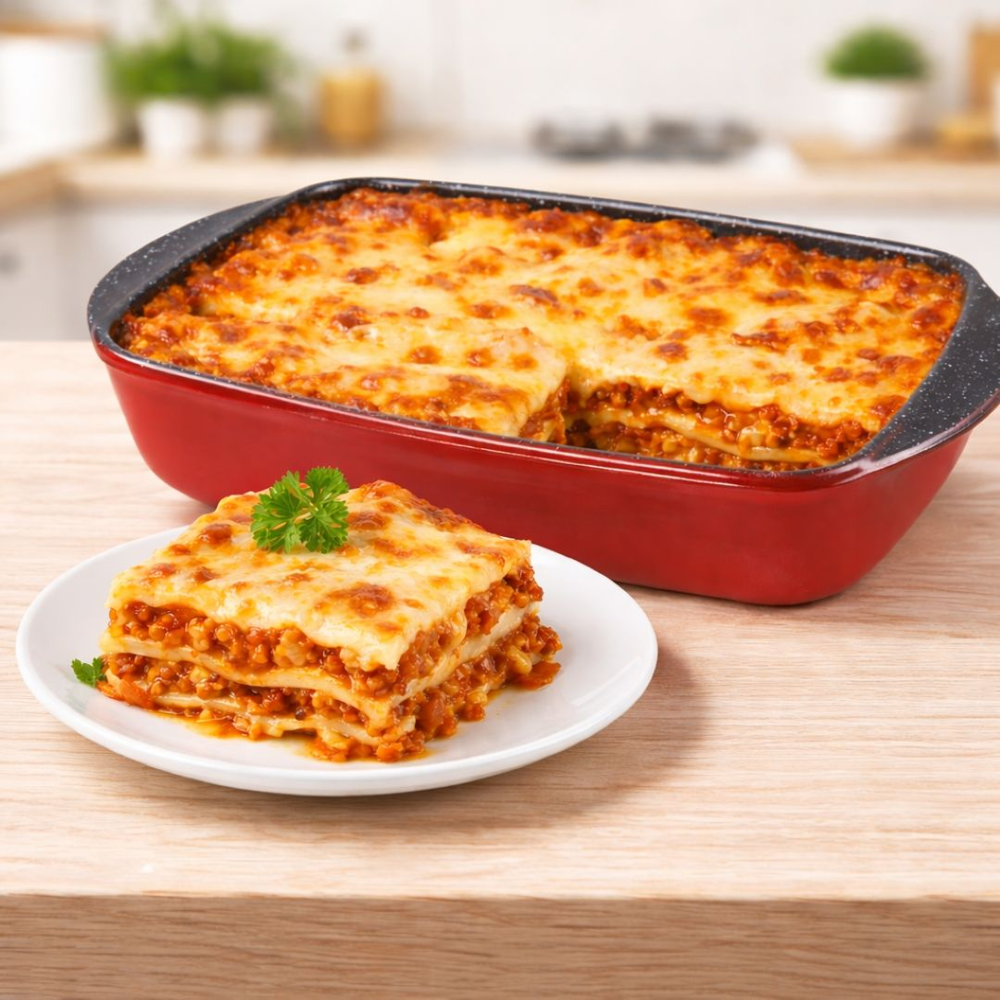

Lasagne alla bolognese

Descrizione
Un classico della cucina emiliana: strati di sfoglia, ragù, besciamella e parmigiano, gratinati al forno fino a doratura.
Tempo di preparazione: 2 ore e 30 minuti
Ingredienti
- 250 g di sfoglia per lasagne
- 400 g di ragù alla bolognese
- 500 ml di besciamella
- 100 g di parmigiano reggiano grattugiato
- Burro q.b.
Procedimento
- Scalda il forno a 180°C e imburra una teglia.
- Stendi un velo di besciamella sul fondo della teglia.
- Alterna strati di sfoglia, ragù, besciamella e parmigiano.
- Termina con besciamella, parmigiano e qualche fiocco di burro.
- Cuoci per 40 minuti, finché la superficie è dorata.
- Lascia riposare 10 minuti prima di servire.